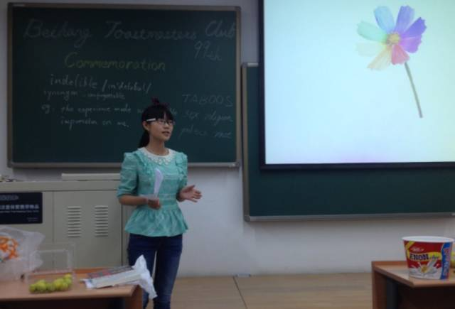
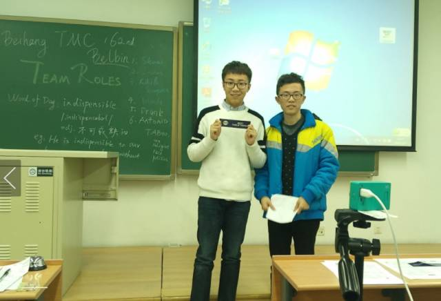
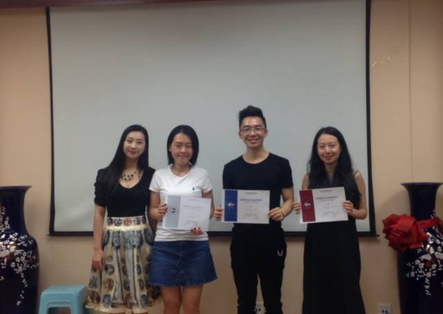
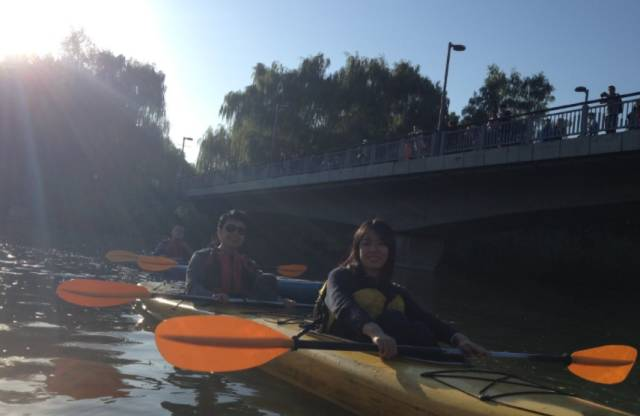
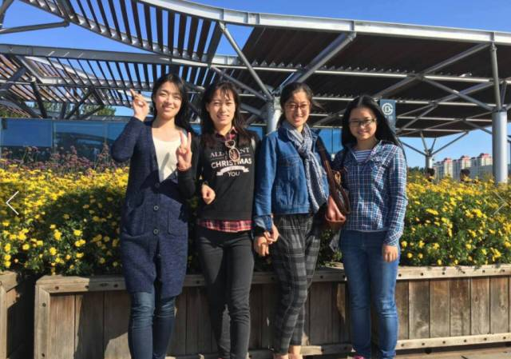
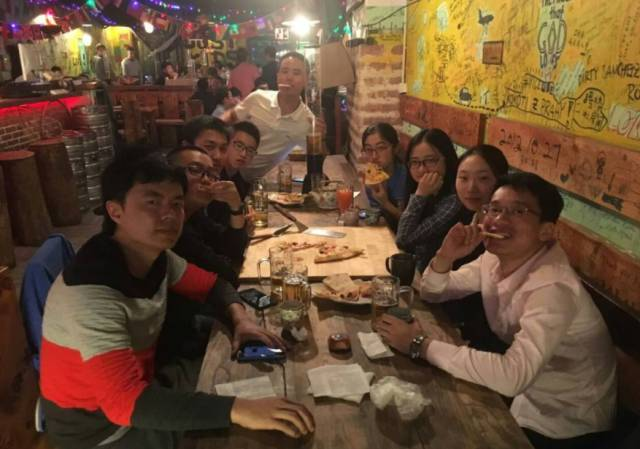
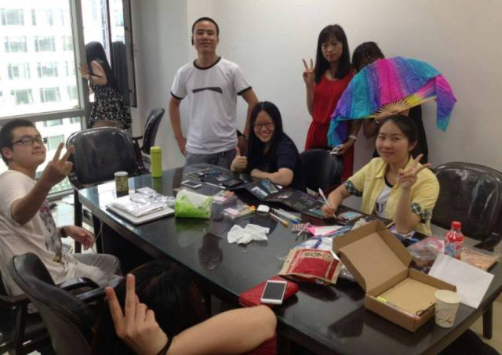

最近听说好多人关注了我
但是却不了解我
口亨，那我来个自我介绍吧

头马全名是Toastmasters International （国际演讲会）1924年始创于美国，是一个非盈利性的教育组织。目前在全球成立了超过14650个俱乐部，覆盖126个国家。会员可以在俱乐部的会议中锻炼自己的演讲和沟通才能，同时还可以通过管理俱乐部中各项事务锻炼其领导才能。因此，90年来，Toastmasters中诞生过无数企业高级管理人才、实业家和领导人。
而北航Toastmasters国际英语演讲俱乐部是一个面向校内外提供专业化，高标准英语的交流平台，旨在提升公共演讲能力、培养团队精神与领袖气质，服务学生服务社会的非营利组织。我们的活动时间和地点
活动时间：每周五19:30-21:30
活动地点：北航新主楼某教室（详情见推送）
我们每次的活动以会议的形式进行，member轮流担任会议里的不同角色（主持人、演讲者、语法官、哼哈官、计时官、评估者……），主要包括三部分：
Table Topics（即兴演讲）
Topicsmaster宣布主题，到场的任何一个人回答均可就该主题进行一致两分钟的即席演讲。这个环节为大家提供机会，练习敏捷思考和快速演讲。

Prepared Speech（备稿演讲）
这些演讲都是会员依照CC手册和AC手册的要求发表演讲。其中，CC手册系统学习条理分明、身体语言、声调变化，如何使演讲更具说服力，以及如何激励他人等等。AC手册介绍职业相关的演讲，如公关演讲和技术演讲，或者关于人际沟通、幽默演讲和巧说故事等主题。
每次例会，通常每次有三位讲员，但也依会议内容和时间长短而增减。
Evaluation（评估）
每个备稿演讲者都由资深会员按照设定的标准，以具有鼓励作用和建设性的方式，进行口头评论。此外，评论员还会给予书面评论，其他会友乐意的话也可以将意见写下来交给speaker。


口语帝的诞生地

收获友情的小船


丰富多彩的出游聚餐活动

活动策划与主持机会
长按下图的二维码——
俗话说的好啊，“北航男女7:3，一对情侣三对基”，但是加入我们俱乐部将有机会体验到不同的男女比例哦，还等什么呢，快来定期参加活动吧～
点击以下链接查看以往活动信息
元旦趴~~@minutes of Beihang TMC164th Meeting
Resolution@minutes of Beihang & Ameco-TMC 163rd Meeting
https://mp.weixin.qq.com/s/IgTNbCEGteNhTTn5Twaq2Q
本页为抢救式本地归档，图文已永久保存。